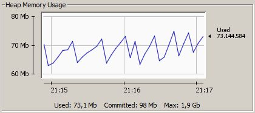

Restrict Memory Usage | OutOfMemoryError
The programs memory is managed by Java, which means Java allocates a certain amount of memory which is then filled up with data of the program and once Java decides so, it cleans up data that is not used anymore (Garbage Collection). This leads to the actual memory usage going up and down constantly, while the allocated memory mostly stays the same. So even if only 50 MB are filled with data by the program at the time, Java may still have 200 MB reserved to optimize Gargabe Collection. Thus, the memory usage in e.g. the Task Manager may not reflect what the program actually requires, just how much Java uses.
Use the /appinfo command in Chatty to get some information
about the current memory usage.
A typical memory usage pattern, which can change over time as the program
is running while Java optimizes Gargabe Collection:

You can restrict how much memory Java is allowed to use by specifying
commandline parameters for Java. Create a shortcut
and add the appropriate parameter after the javaw.exe but
before the -jar parameter.
For example to restrict memory to 100 MB: javaw -Xmx100M -jar "D:\Chatty\Chatty.jar"
If you get an OutOfMemoryError then Java ran out of memory. This can either be because it simply can't allocate enough memory (at least 100 MB is recommended) or there is a bug that prevents it from cleaning up memory that is not actually used anymore. These kinds of bugs are pretty difficult to track down though, especially if they only occur somewhat randomly.